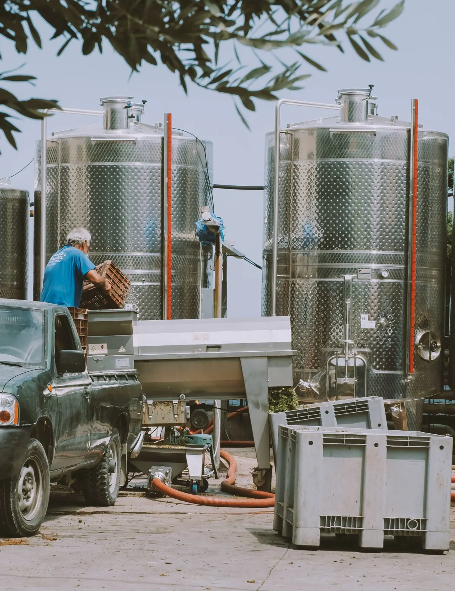

Винодельни
Терруар, урожай и люди, которые стоят за каждой бутылкой. Видео продолжает дегустацию, когда гость уже уехал.
- Снимаем
- Фильм о винодельне, ролики о линейке вин, курс по дегустации, интервью с виноделом.
- Для чего
- Дегустационный зал, сайт и обучение партнёров.